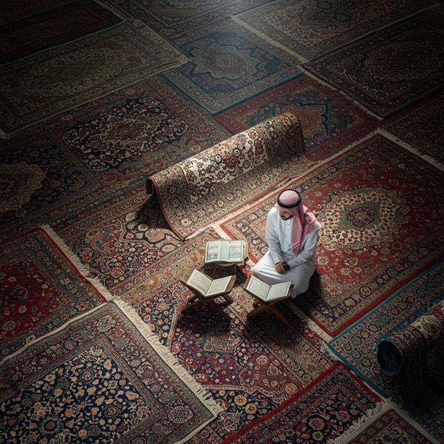

The Eclectic Polymath Podcast · Archive
#014 Religious Studies: The Qur’an

About this episode
Welcome back to The Eclectic Polymath Podcast, a curiosity driven deep dive show built around the questions that pull us in.
The Qur’an is not only a scripture, but a recitation, a revelation, and the spiritual center of Islam.
This episode moves through the world of seventh century Arabia, the life of the Prophet Muhammad, and the emergence of a text that would shape law, language, art, politics, worship, and civilization across the globe.
Key points
- Welcome back to The Eclectic Polymath Podcast, a curiosity driven deep dive show built around the questions that pull us in.
- The Qur’an is not only a scripture, but a recitation, a revelation, and the spiritual center of Islam.
- This episode moves through the world of seventh century Arabia, the life of the Prophet Muhammad, and the emergence of a text that would shape law, language, art, politics, worship, and civilization across the globe.
- We look at submission, mercy, justice, prophecy, community, and the relationship between God and humanity, while also exploring why the Qur’an is experienced not simply as something read, but as something heard, memorized, recited, and lived.